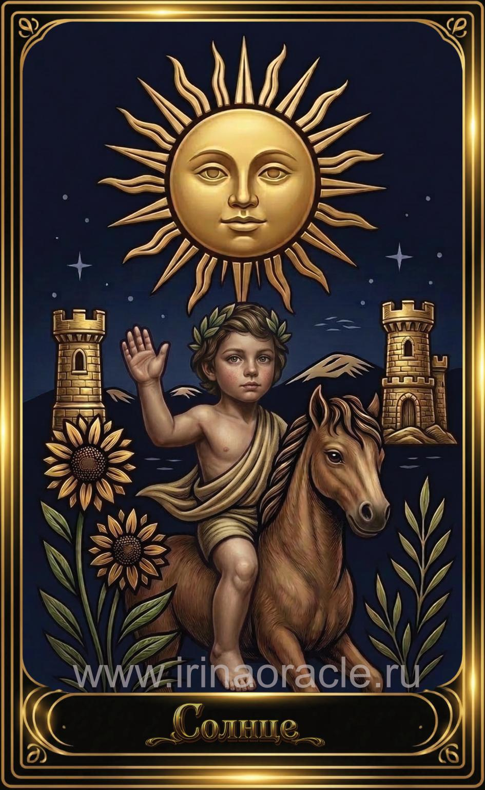

Солнце — значение карты Таро
Солнце — значение карты Таро

Солнце — это карта радости, успеха, ясности и жизненной энергии. Она приносит свет, тепло и ощущение, что всё складывается наилучшим образом. Это символ победы, искренности, открытости и внутреннего сияния.
Общее значение
Солнце указывает на период удачи, ясности и благополучия. Это карта, которая говорит: ты на правильном пути, и впереди — светлые перспективы. Она приносит уверенность, вдохновение и ощущение внутренней силы.
Это время, когда всё становится понятным и простым.
Любовь и отношения
В любви Солнце — одна из самых благоприятных карт. Она говорит о счастье, гармонии, искренности и радости быть вместе. Это отношения, наполненные теплом, доверием и взаимностью.
В тени — чрезмерный оптимизм, идеализация или игнорирование проблем.
Работа и финансы
В работе Солнце указывает на успех, признание, ясность целей и благоприятные возможности. Это время, когда усилия дают яркие результаты.
В финансах карта говорит о стабильности, росте и удачных решениях.
Здоровье
Солнце указывает на отличное самочувствие, энергию, восстановление и общее улучшение состояния. Это карта жизненной силы и здоровья.
Иногда она говорит о пользе солнечного света, движения и активности.
Совет карты
Свети. Будь собой. Солнце советует действовать открыто, уверенно и с радостью. Не скрывай свои таланты — сейчас время проявляться.
Оптимизм — твой главный ресурс.
Теневая сторона
В тени Солнце проявляется как самоуверенность, эгоцентризм, игнорирование рисков или чрезмерная наивность. Иногда — как стремление скрыть проблемы за улыбкой.
Карта напоминает: свет не отменяет тени, но помогает их увидеть.